Sobre o Projeto

Refractions of Greed é um projeto desenvolvido como Trabalho de Conclusão de Curso (TCC) por alunos da ETEC Martinho Di Ciero, utilizando Godot Engine e C#.
Integrantes
- Ryan Ferreira : Dev Full-Stack | Designer Secundário
- Arthur Martin : Dev Back-End
- Murilo Andrade : Character Designer | Designer Geral
- Miguel Fredo : Level Designer | Designer Geral
- Pedro Aguiar : Trilha Sonora | Sonoplastia
- Gustavo Silva : Game Designer
- Pedro Flores : A definir...
Contato
Em caso de dúvidas ou sugestões, entre em contato pelo e-mail:
RefractionsOfGreed@RyanMF.Onmicrosoft.com